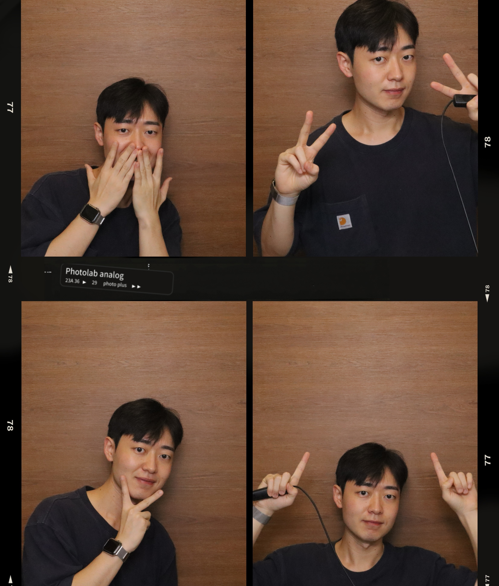
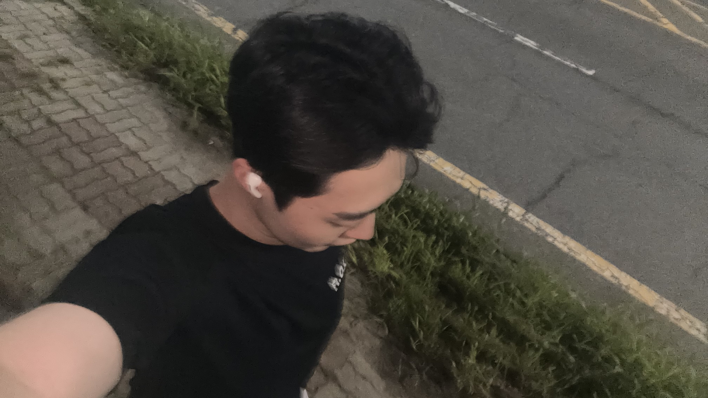
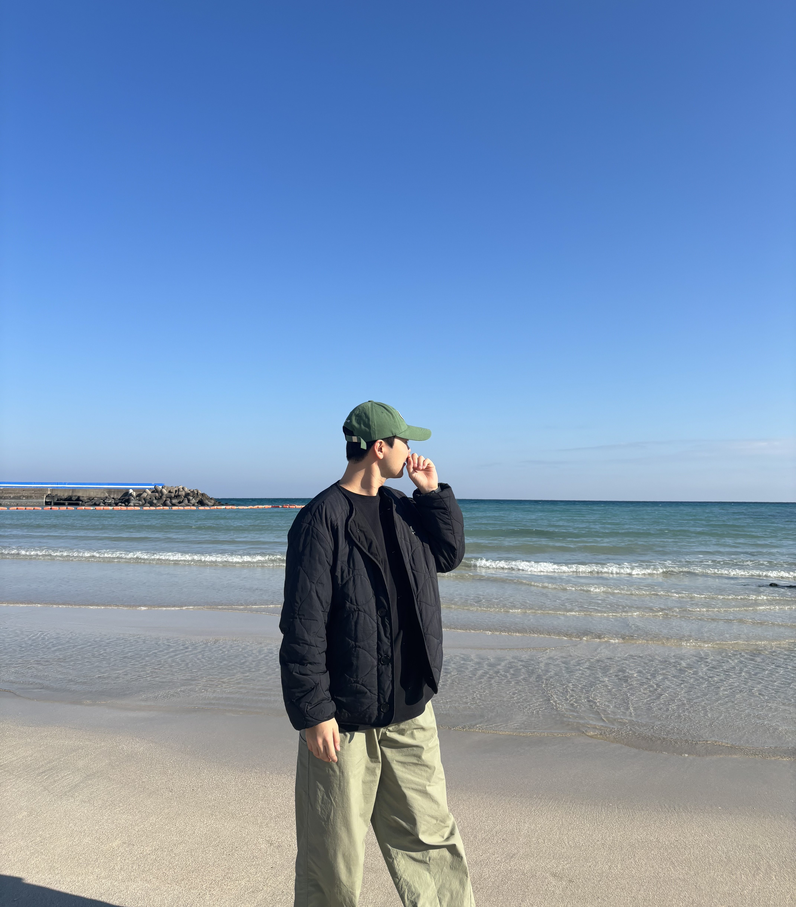
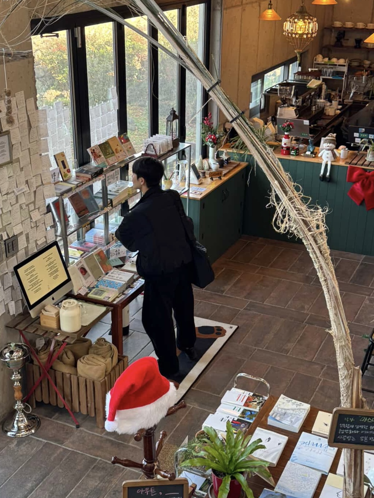
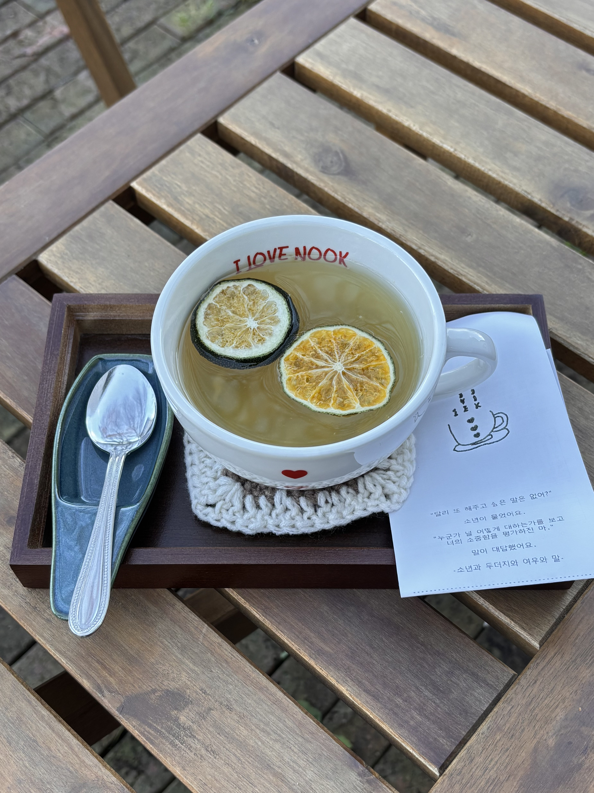
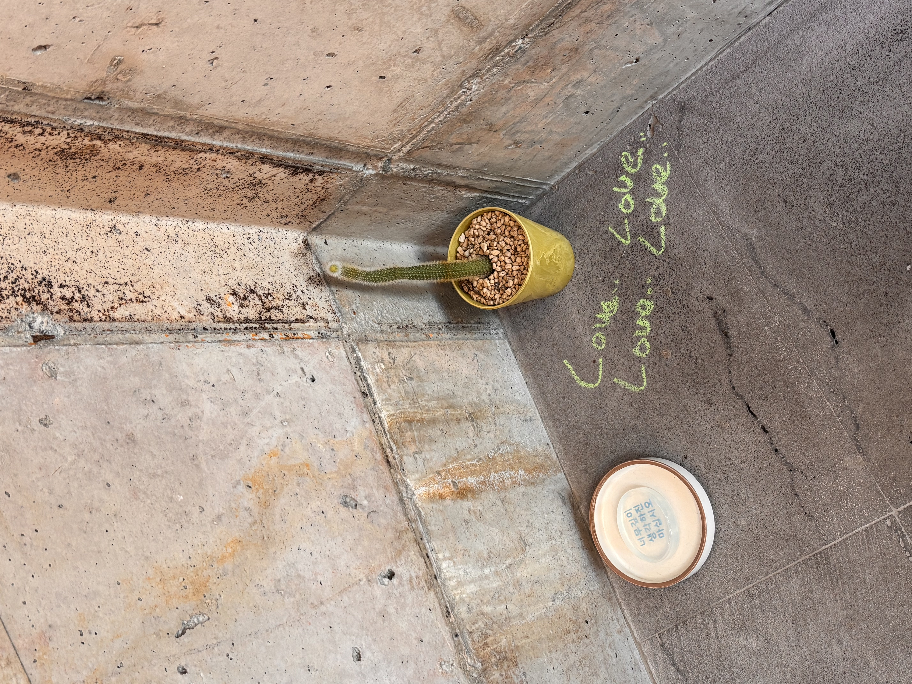
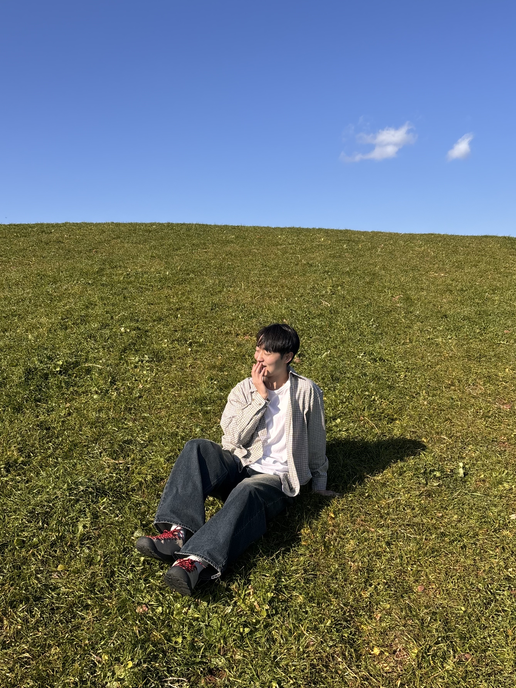
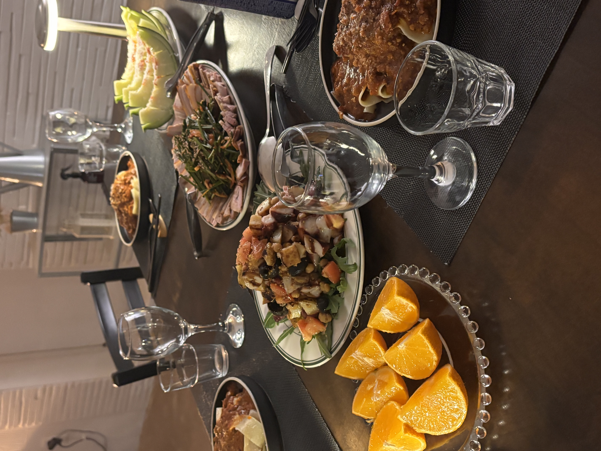
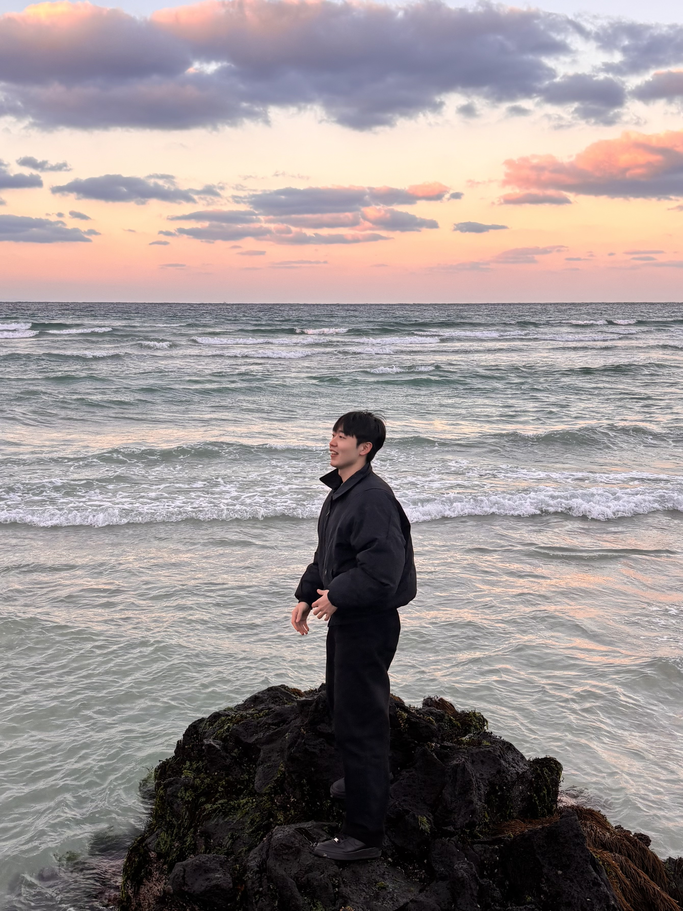

나의 여정과 기록 : Archive of My Journey









위에서부터 오른쪽으로 갑니다.
1. 첫 혼생네컷입니다. 전역날이라 기분 좋았나봅니다.
2. 마라톤 준비하며 자주 뛰었었습니다. MZ샷 따라하는 늙은이 같지만 MZ긴 합니다.
3. 23년도 월정리 바다입니다. 푸른 바다가 너무 예뻤습니다.
4. 수다떨지 못하는 북카페였습니다. 조용히 책에 집중하기 좋았습니다.
5. 아이러브눅의 청귤차입니다. 추운 날씨에 밖에서 먹느라 따뜻한 걸 시켰는데 5분만에 다 식어버렸습니다. 사장님이 다시 데워주셨습니다. 감사합니다 사장님
6. Love.. Love.. Love.. Love..
7. 웨딩사진 많이 촬영한다는 안친오름입니다. 오름인데 입장료를 내야하는 곳은 처음이었지만 날씨 좋으면 정말 예쁘긴 합니다.
8. 제주도가면 꼭 가는 게스트하우스가 있습니다. 정말 좋은 사람들을 많이 만나서 아직까지 좋은 인연들을 이어가고 있습니다.
9. 25년 함덕해수욕장에서 노을질 때 한 장 찍었습니다. 보정이 1도 없는 순수 사진인데 어쩜 하늘이 저렇게 예쁠 수 있을까요? 또 가고싶습니다.